Example of State Estimation of Linear Gausian System
This demo shows how to setup estimation experiment for estimation of the state of an linear time-invariant system. The estimates will be obtained form using following implemented estimation methods:
- nefUDKalman - UD version of Kalman filter
- nefUKF - Unscented Kalman filter
- nefKalman - Kalman filter
- nefDD1 - Divide difference filter 1st-order
- nefDD2 - Divide difference filter 2nd-order
- nefPF - Particle filter with prior and EKF sampling density
Contents
Problem statement
The state of the following linead time-invariant system will be estimated
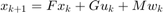
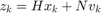
where 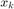 denotes state to be estimated and 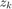 denotes the measurement. The stochastic quantities 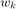 and 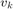 are described by the following probability density functions (pdf's)
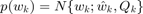
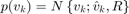
and the pdf of the initial state 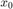 is
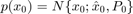
Description of the system model
The before defined system can be described within the NEF by two means. First, the system can be structuraly described using the generally multivariate nonlinear function determining the state transition and measurement. Second, the system can be modeled probabiliticaly by determining the state update and measurement pdf's. Both possibilitoies will be addressed in this example.
Structural description of the system
For the structural description the the class nefEqSystem will be used. The class constructor requires as input parameters the state and measurement functions and the pdf's of the random variables , and .
Both the state update and measurement functions are linear thus the class nefLinFunction will be used to describe them as MATLAB object f and h, respectivelly.
F = [0.9 0.01;0.01 0.9]; G = eye(2); M = eye(2); f = nefLinFunction(F,G,M); H = [5 0;0 1]; N = eye(2); h = nefLinFunction(H,eye(2),N);
Now it is neccessary to describe the random variables. As they are all gaussinan the they will be described as instances of the class nefGaussianRV.
Q = 0.05*[1 2;2 5]; w = nefGaussianRV([0;0],Q); R = 0.01*[3 1;1 4]; v = nefGaussianRV([0;0],R); x0 = nefGaussianRV([1;10],1e-1*eye(2));
At this point it is finaly possible to create object describing the system model
model=nefEqSystem(f,h,w,v,x0);
In case the user wants to emply the structural description of the system and perform the state estimation using the particle filter it is necessary to specify the logarithm of the transtion pdf and the log-likelihood function. These function for the system in this example can be expressed using handle function.
ltpdf = @(nx,x,u,t) - log(2*pi) - 0.5*log(det(Q)) - 0.5*sum(((nx-F*x-G*u)'*inv(Q))'.*(nx-F*x-G*u)); llpdf = @(z,x,u,t) - log(2*pi) - 0.5*log(det(R)) - 0.5*sum(((z-H*x)'*inv(R))'.*(z-H*x));
The final object describing the system model with the additional log-transtion and log-likelihood pdfs is created using again the contructor nefEqSystem with two additional pairs of parameters
modelLogLike=nefEqSystem(f,h,w,v,x0','logTransitionPDF',ltpdf,'logLikelihood',llpdf);
Probabilistic description of the system
The best way to describe the system for the need of particle filters is to use the probabilistical description. The probabilistic description of the above defined system is quite straightforward. Both the transient and measurement pdf's are gaussian pdf's where the mean is given by the state update and measurement function (omiting the noises). The covariance matrices are identical to covariance matrices of the state and parameter noise.
The transient and measurement pdf's objects are created as follows
xmean = nefLinFunction(F,G,[]); xRV = nefGaussianRV(xmean,Q); zmean = nefLinFunction(H,[],[]); zRV = nefGaussianRV(zmean,R);
The object describing the probabilitic model of the system is then created issuing the nefPDFSystem constructor
modelPdf = nefPDFSystem(xRV,zRV,x0);
Setup of the estimator objects
UD = nefDD1(model); UKF = nefUKF(model); DD1 = nefDD1(model); DD2 = nefDD2(model); KALMAN = nefKalman(model); PF_EKF = nefPF(modelLogLike,'sampleSize',100,'resamplingSched','dynamic','samplingDensity','ekf'); PF = nefPF(modelPdf,'sampleSize',1000,'resamplingSched','dynamic','samplingDensity','prior');
Simulation of system trajectory
The last step before proceeding to the state estimation it is necessary to prepare data which will be processed by the estimators. The ability of the model object to simulate the system trajectory will be employed.
As first the simulation horizon and some input 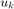 will be synthetized.
timeHorizon = 20; u = [ones(1,10) -1*ones(1,10);-1*ones(1,10) ones(1,10)];
In this example the possibility to use pregenetated for the simulation will be presented. Thus the following command show the way the random variable object w can generate set of random samples using the drawSample method.
wSamples = drawSample(w,timeHorizon);
The method simulate of the object model then processes the synthetized input u, the pregenerated sequence of the state noise wSamples, the internaly generated sequence of measurement noise and random sample of the initial pdf.
[z,x] = simulate(model,timeHorizon,u,'w',wSamples);
It should be noted that the sequence of measurement noise and the initial condition can be also specified as input parameters. This is useful for exact reproduction of the experiment.
The State Estimation
The estimation process itself is for the individual estimators processed issuing the following commands
[val_UD] = estimate(UD,z,u); [val_UKF] = estimate(UKF,z,u); [val_DD1] = estimate(DD1,z,u); [val_DD2] = estimate(DD2,z,u); [val_KALMAN] = estimate(KALMAN,z,u); [val_PF_EKF] = estimate(PF_EKF,z,u); [val_PF] = estimate(PF,z,u);
The output of all the estimators are cell arrays of filtering pdf's. In order to obtain the point estimate in the sense of conditional mean value the method evalMean can be used.
for i = 1:timeHorizon xest_UD(:,i) = evalMean(val_UD{i}); xest_UKF(:,i) = evalMean(val_UKF{i}); xest_DD1(:,i) = evalMean(val_DD1{i}); xest_DD2(:,i) = evalMean(val_DD2{i}); xest_KALMAN(:,i) = evalMean(val_KALMAN{i}); xest_PF_EKF(:,i) = evalMean(val_PF_EKF{i}); xest_PF(:,i) = evalMean(val_PF{i}); end